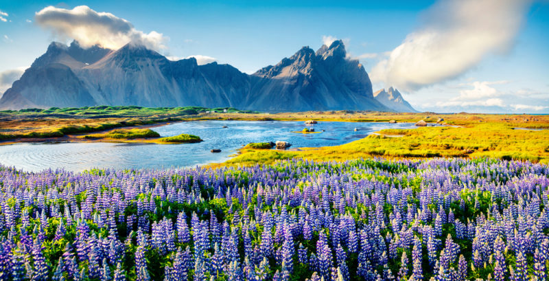

Ficha de sendero
Sendero Volcán Villarrica
Dificultad: Moderada
- Distancia
- 12 km
- Tiempo estimado
- 4 horas
- Punto de partida
- Sector Los Nevados
Región de La Araucanía

Ficha de sendero
Dificultad: Moderada
Artesanía local
Arriendo de equipo
Guía certificado
4.7 de 5, basado en comentarios de visitantes
Excelente ruta, muy limpia y bien señalizada.
Hermosa vista al volcán, recomendada para familias.